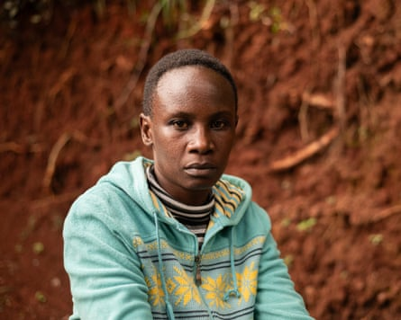
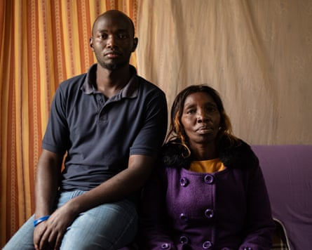
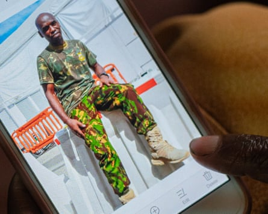

The relatives of a Kenyan police officer who went missing while working in Haiti have spoken of their anguish and anger at Kenyan authorities over a lack of definitive information about what has happened to him.
Benedict Kuria and some colleagues were ambushed in March by suspected gang members. Haitian media reported that he had died, but Kenya’s police service says a search is continuing.
“We’ve tried many times to get information from the government, but they’ve refused,” said Kuria’s wife, Miriam Watima. “We don’t know what to do any more.”
Hundreds of Kenyan officers have been posted to Haiti as part of a US and UN-backed mission to help police in the Caribbean country get to grips with rampant gang violence. More than a million people have been forced from their homes in a relentless cycle of indiscriminate killings, kidnappings, gang rapes and arson.
Kuria’s case has reignited public concern over Kenya’s involvement in the multinational security support mission (MSS), which started last year and was the subject of intense domestic public and legal scrutiny from the outset.
Miriam Watima, Kuria’s wife: ‘We don’t know what to do any more’.Photograph: Edwin Ndeke/The Guardian
In a search for answers, Kuria’s family filed a court petition in June that listed the attorney-general, the inspector general of police and various ministers as respondents. A Nairobi court has scheduled a preliminary court appearance for September but the family, who want the matter treated with urgency, have called for the session to be brought forward.
“We entrusted our son with the government,” said Kuria’s mother, Jacinta Kabiru. “They should give us the information.”
Kuria, a 33-year-old administration police officer, joined the MSS last July. On 26 March the MSS said he was “unaccounted for” after an ambush the day before on a team who had gone to assist the recovery of a Haitian police vehicle stuck in a ditch that it suspected had been dug by gangs.
Later on 26 March, Kenyan police said a search and rescue mission was continuing, while local leaders and police chiefs went to Watima’s house in the town of Kikuyu, north-west of Nairobi in Kiambu county, to tell her that her husband was missing.
But the following day, Haitian media outlets reported that Kuria had been killed, quoting Haiti’s presidential transitional council as saying that he “fell … while carrying out his mission” and “gave his life for a better future for our country”.
In the months since, his family’s desperate scramble for clarity has included visits to police – who have told them a search and rescue mission is continuing – and politicians’ offices. Through their lawyer, Mbuthi Gathenji, they have petitioned parliament and written letters to Kenya’s attorney-general and María Isabel Salvador, the special representative of the UN secretary-general in Haiti.
Their court petition accuses government officials of “refusing and/or neglecting” to provide the family with information on Kuria’s whereabouts “to ease their agony”, and asks judges to assist in “compelling the respondents to disclose information”.
“You can imagine the pain that the parents and relatives are going through,” said Gathenji. “We are asking the government to come out with finality.”
The Guardian has approached Kenya’s interior cabinet secretary as well as the MSS and the Kenyan police for comment.
‘What we want is closure.’ Philip Kuria, Benedict’s brother, and their mother, Jacinta Kabiru.Photograph: Edwin Ndeke/The Guardian
Kenya’s leading role in the mission stemmed from a desire by the US and the UN to restructure international intervention in Haiti with a multinational mission headed by an African country, after a series of floundering UN missions during which UN troops caused a cholera outbreak and peacekeepers were accused of sexual assault.
Kenya, which has participated in many peacekeeping missions internationally, volunteered to lead the Haiti intervention. For its president, William Ruto, the deployment was a chance to position his country as a reliable international partner and burnish the reputation of its police force, which regularly uses violence against civilians .
The arrival of the Kenyan officers in June 2024 brought some hope to Haiti, but the mission, beset by funding, equipment and personnel issues, has failed to repel the criminal advance.
In April, Salvador said Haiti was approaching a “point of no return”. And on Wednesday, Ghada Waly, the executive director of the UN office on drugs and crime, told the UN security council that gangs now controlled an estimated 90% of the capital, Port-au-Prince.
Kuria’s mother had tried to dissuade him from joining the mission after learning about Haiti’s violent reputation, but he was determined to go, motivated in part by the extra pay the job came with, which he planned to use to improve his relatives’ lives. “This is an opportunity we have got as a family,” his brother, Philip Kuria, recalled him saying.
Kuria was due to return this year at the end of his one-year contract. “It’s a struggle,” said Philip. “What we want is closure.”
Jacinta Kabiru shows a photograph her son Benedict on her phone.Photograph: Edwin Ndeke/The Guardian
Kuria’s uncle, Daniel Ndung’u, said the family was open to any news. “My prayer is that he’s going to come back to join us,” he said. “This suspense is actually torturing us.”
Watima recalled her last call with Kuria as they discussed academic plans for their 17-year-old daughter. She tops up credit for her husband’s phone so it doesn’t get deactivated, hoping that one day he’ll call again. In the meantime, she waits for the government. “They should tell us whether he’s alive or not,” she said. “That’s all we want to know.”